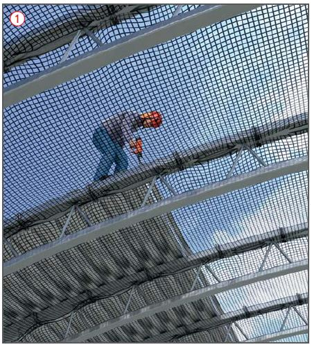
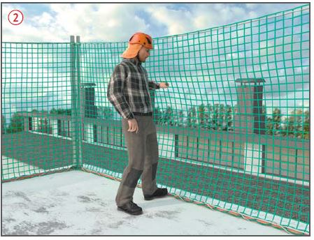

Dachdeckung mit Profilblechen
|
|

Gefährdungen
- Fehlende Sicherungsmaßnahmen an den Gebäudeaußenkanten und nach innen können Absturzunfälle zur Folge haben. Nasses oder mit Raureif überzogenes Blech kann zu Sturzunfällen führen.
Allgemeines
- Sorgfältige Planung und Organisation sind wichtige Voraussetzungen für einen reibungslosen und sicheren Ablauf der Arbeiten.
- Betriebsanweisungen erstellen und die Beschäftigten unterweisen.
Schutzmaßnahmen
- Bei Transport, Lagerung und Verlegung folgendes beachten:
- Verlegearbeiten nur unter Aufsicht einer weisungsbefugten und fachkundigen Person ausführen lassen,
- schriftliche Montageanweisung mit Angaben zur Verlegerichtung und Befestigung erstellen und auf der Baustelle bereithalten,
- den Gefahrenbereich unterhalb der Verlegearbeiten absperren und kennzeichnen,
- Aufstiege zum Arbeitsplatz auf dem Dach über Treppen oder Treppentürme gewährleisten,
- bei Lagerung paketierter Bleche auf dem Dach Tragfähigkeit der Unterkonstruktion berücksichtigen,
- geöffnete Pakete und einzelne Bleche gegen Abheben durch Wind sichern, bei böigem und starkem Wind die Arbeiten einstellen,
- lösen der Anschlagmittel nur von sicherem Standplatz aus.
Absturzsicherungen
- Absturzsicherungen an Gebäudeaußenkanten für Arbeitsplätze bei > 2,00 m Absturzhöhe vorsehen, z. B. Seitenschutz, Fanggerüst, Randsicherungen oder in mind. 2,00 m Abstand durch absperren, z. B. Geländer, Ketten; Trassierbänder sind als Absperrung unzulässig.
- Auffangeinrichtungen bei Absturzmöglichkeit ins Gebäudeinnere vorsehen, z. B. Schutznetze
 .
.
- Verkehrswege mit Absturzgefahr im Randbereich von Dächern bei > 1,00 m Absturzhöhe z.B. am Ortgang, an der Traufe und an Öffnungen mit Seitenschutz sichern.
- Bleche durch geeignete Oberflächenbeschaffenheit rutschsicher gestalten (z. B. rutschhemmende Matten).
- Dachausschnitte, z. B. für Lichtkuppeln, unter Absturzsicherung herstellen und gegen Hineinstürzen von Personen sichern, z. B. durch trittsichere Abdeckungen oder Netzkonstruktionen.
- Die Absturzsicherung ist bis zum Einbau einer durchsturzsicheren Lichtkuppel vorzuhalten.
- Schutznetze sind möglichst dicht unterhalb der zu sichernden Arbeitsplätze aufzuhängen .
- Nur geprüfte, dauerhaft gekennzeichnete und unbeschädigte Schutznetze vom System S (Netze mit Randseil) verwenden.
- Schutznetze nur einsetzen, wenn die Prüfung der Alterung nicht länger als 1 Jahr zurück liegt. Für Schutznetze muss eine Gebrauchsanleitung auf der Baustelle vorhanden sein.

Randsicherung auf der Dachfläche

Randsicherung unterhalb der Dachfläche
Randsicherungen
- Randsicherungen können auf
 oder unterhalb
oder unterhalb  der Dachfläche oder Deckenkante angebracht werden und wirken rückhaltend oder verhindern einen tieferen Absturz.
der Dachfläche oder Deckenkante angebracht werden und wirken rückhaltend oder verhindern einen tieferen Absturz.
- Vor der Montage statische und konstruktive Voraussetzungen der Befestigungspunkte am Bauwerk klären.
- Montage gemäß Aufbau- und Verwendungsanleitung des Herstellers.
- Können aus arbeitssicherheitstechnischen Gründen und baulichen Gegebenheiten
- Seitenschutz oder Randsicherungen,
- Fanggerüste oder Schutznetze
und
- Dachfanggerüste oder Dachschutzwände
nicht verwendet werden, kann unter Berücksichtigung der Bewertung der Gefährdung nach Art und Dauer der Tätigkeit persönliche Schutzausrüstungen gegen Absturz (PSAgA) verwendet werden, wenn geeignete Anschlageinrichtungen vorhanden sind.
- PSAgA nur an geeigneten Anschlageinrichtungen befestigen. Anschlagmöglichkeiten an Teilen baulicher Anlagen können zur Befestigung genutzt werden, wenn deren Tragkraft für eine Person von 9 kN einschließlich den für die Rettung anzusetzenden Lasten nachgewiesen ist.
- Der Unternehmer oder ein fachlich geeigneter Vorgesetzter hat die Anschlageinrichtungen und -möglichkeiten festzulegen und dafür zu sorgen, dass die PSAgA benutzt wird.
- Bei Gefahr des freien Hängens in der PSAgA ist ein Rettungskonzept inkl. Rettungsausrüstung erforderlich.
Arbeitsmedizinische Vorsorge
- Arbeitsmedizinische Vorsorge nach Ergebnis der Gefährdungsbeurteilung veranlassen (Pflichtvorsorge) oder anbieten (Angebotsvorsorge). Hierzu Beratung durch den Betriebsarzt.
07/2021